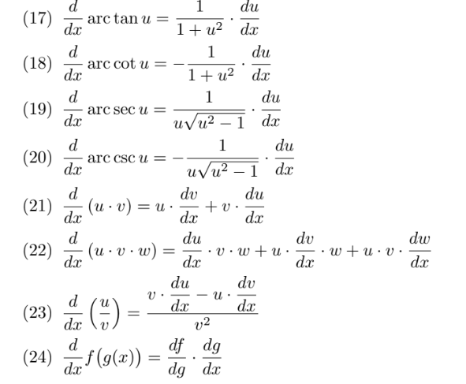

Derivacion por Formula
Calculo Diferencial
En el calculo Diferencial, asi como se puede realizar cualquier derivada por el metodo de los 4 pasos, se puede ahorrar gran parte del trabajo,
con formulas, que tienen una estructura predeterminada,
y hacen que el mismo resultado que nos arrojan los 4 pasos, se puedan hacer de manera mas directa, para esto, se ocupan las formulas siguientes:



Una tabla de derivados también puede utilizarse para trazar una línea de tendencia,
ya que puede trazar una línea para cualquier variable que esté correlacionada con el tiempo.
La correlación temporal entre dos variables es la misma para cada paso de tiempo,
lo que facilita el trazado de una línea de tendencia.